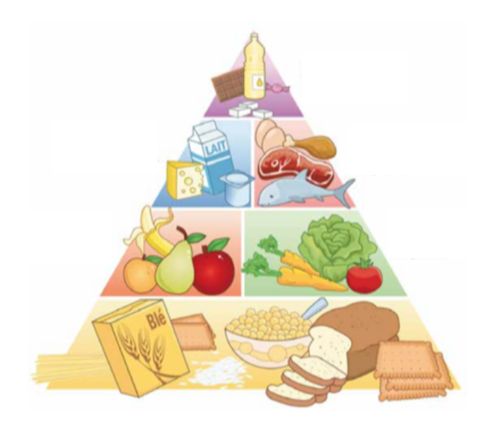

<div class="container">
  <div id="page1">
    <div>
      <h2> Pour bien commencer : </h2>
      <p>
        Maintenant, tu sais soigner, tu sais prévenir en cas de soucis mais bien s’alimenter permet d’éviter certains
        problèmes de santé.</br>
        Aussi, il est important de savoir quoi manger et en quelle quantité pour être en bonne santé. </br>
      </p>
      <h2> Déroulement : </h2>
      <p>Associe la portion idéale par jour pour toutes ces catégories d’aliments .</br></p>
      <p>Ainsi, à la fin, tu seras capables de conseiller Astérix et Obélix sur la composition de leurs repas.</br></p>
      <div class="text-center">
        <br />
      </div>
    </div>
  </div>
</div>